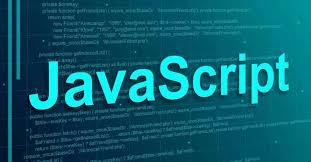
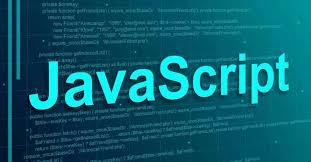

Dasturlash tillari haqida ma'lumot
JavaScript - bu interaktiv va dinamik veb-saytlarni yaratish uchun keng qo'llaniladigan dasturlash tili. U birinchi marta 1995 yilda Brendan Eich tomonidan ishlab chiqilgan va hozirda ECMAScript standartlari organi tomonidan qo'llab-quvvatlanadi. JavaScript barcha asosiy veb-brauzerlar tomonidan qo'llab-quvvatlanadigan yuqori darajali, talqin qilingan dasturlash tilidir.
 


JavaScript asosan veb-brauzerda ishlaydigan mijoz tomoni skriptlarini yaratish uchun ishlatiladi. Bu shuni anglatadiki, u serverda emas, balki foydalanuvchining kompyuterida bajariladi. Bu foydalanuvchi tajribasini tezroq va sezgirroq qilish imkonini beradi, chunki kod to'g'ridan-to'g'ri brauzerda serverga borishni talab qilmasdan ishlashi mumkin. Bundan tashqari, JavaScript-dan Node.js kabi texnologiyalar yordamida server tomonidagi skriptlarni yaratish uchun foydalanish mumkin.